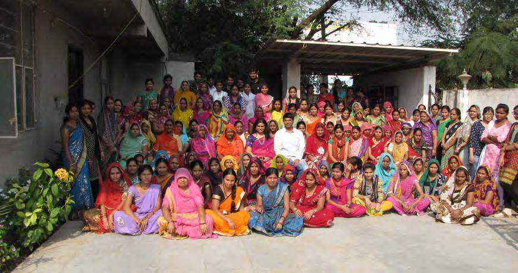
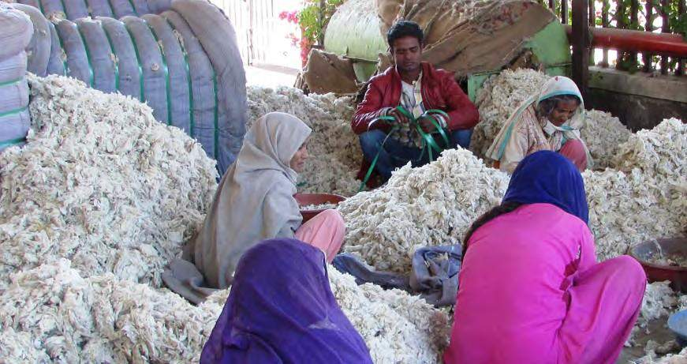
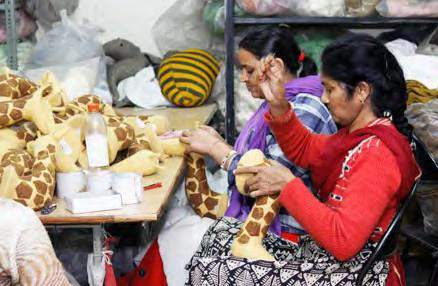
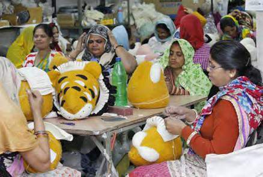

Our Story
Twenty-four years, one material, and 2,000 women behind it.

Raw wool, sorted by handHow We Started
Built on one intent: real income, for women, done right.
Parampara was started by Mr. Vishal and Dr. Savita Choudhary in November 2000, with a simple goal — build an environmentally responsible organisation that gives women an incremental income and a real path to financial independence.
Twenty-four years later, that goal hasn't changed. We're now a $1.2 million annual turnover export house, growing more than 10% a year, but the felt is still cut, dyed, and stitched by hand — the same way it was on day one.
We specialise in 100% wool felt Christmas decorations and interior decor pieces, and everything — from raw wool to final shipment — is managed in-house: felting, dyeing, cutting, stitching, packing, and dispatch.
Vision
To be a respected export firm that provides, by leveraging artisanal skills, unique handmade products and related services — in the best possible quality — to international importers.
Mission
To achieve our objectives in an environment of fairness, honesty and courtesy toward our clients, employees, vendors, and society at large.
Customer Delight
A commitment to surpass our customer expectations.
Leadership by Example
Setting standards in our business and transactions, for the industry and our own teams.
Integrity & Transparency
Ethical, sincere, and open in every dealing.
Fairness
Objective, transaction-oriented, earning trust and respect.
Pursuit of Excellence
Striving relentlessly to improve ourselves, our teams, and our products.
People First
99% of our workforce is women.
Parampara is an equal-opportunity organisation with special emphasis on employing women from socially less fortunate communities — including widows and women with disabilities — from peri-urban and rural areas. In-house, we employ 120 people; including our wider artisan network, that grows to 2,000 women.
We're also actively associated with the Blind People Association project in Rajasthan, an NGO based in Ahmedabad that works with mentally challenged and visually impaired people.

Where We Work
Two facilities, each built for a purpose.

Kanakpura RIICO, Sirsi Road, Jaipur
A 40,000 sq ft facility housing stitching, cutting, packing, designing, and dispatch — deliberately built close to residential areas, so women can work near home.
Production & Dyeing Unit, Bagru
A 30,000 sq ft, 100% socially and environmentally compliant facility, 25km from Jaipur — home to our felting, dyeing, and printing operations, and our zero-liquid-discharge water system.
Recognition & Compliance
Reach, credibility, and accountability.
The White House
Our products were selected for President Barack Obama's first Christmas in the White House, for the family's living room.
House of Commons, London
An ongoing supplier of Christmas decorations to the House of Commons, alongside leading brands across the UK and Europe.
Vice President of India, 2005
Recipient of the award for innovation in crafts, recognising Parampara's design and vision.
CBI, Netherlands
Selected by CBI, a Dutch government agency, for further training and export marketing from a developing country to Europe.
CTPAT Compliant
Certified under the U.S. Customs Trade Partnership Against Terrorism for secure global supply chains.
Sedex SMETA Pillar 2
Independently audited for ethical trade and social accountability under the SMETA Pillar 2 technical audit.
Let's Work Together
Ready to see the collection?
Browse the full range or get in touch directly — we're happy to send samples, pricing, and lead times.